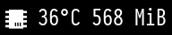

D3: i3status-rust trial bar
Your note (2026-11-17): "trial i3status-rust as a second bar, then switch. Icons are not specific enough; the GPU widget had no icon." The rest is fixed in spec.md. This page decides the 3 points that are your choice. Answer in the chat with the line at the bottom.
Today
Question 1: GPU icon
A. md-expansion_card U+F08AE recommended
B. md-expansion_card_variant U+F0FB2
Why the designer is against B: at 18 pt the details are smaller and the fan is harder to read; A says "GPU" faster.
C. md-chip U+F061A

Why the designer is against C: it looks almost the same as the RAM icon (md-memory) a few blocks to the left. That is the vagueness you want to remove.
Question 2: CPU frequency
A. Keep the per-GHz histogram (small script) recommended
B. Built-in average frequency
Why the designer is against B: with 32 threads the average hides the pattern you built the histogram for (a few hot cores vs. all cores busy).
Question 3: music and weather (written in barista, never wired)
A. Leave both out recommended
Same widgets as today. The bar is already wide.
B. Add music
Built-in music block (MPRIS): title and play/pause, click to pause. Shows only an icon when no player runs.
Why the designer is against B: you never wired it in barista, so there is no sign you missed it; it adds width.
C. Add music and weather
Plus the built-in weather block with met.no (no API key), location found automatically, every 15 min.
Why the designer is against C: the same as B, plus an outside network call from the bar.
Picks
What doesn't change
- Widget order stays as in main.go (keyboard, load, temp, freq, mem, disk, GPU, net, battery, volume, ccusage, clipboard, clock). It can be revisited after the trial week.
- Colors: green #6d6, yellow #dd6, red #d66, dim #777.
- Barista keeps running at the bottom. The trial bar appears at the top while Mod3 is held, until the "Switch" item (about 2026-11-24).
- One-time step for you:
sudo pacman -S i3status-rust ttf-nerd-fonts-symbols-mono(neither is installed).